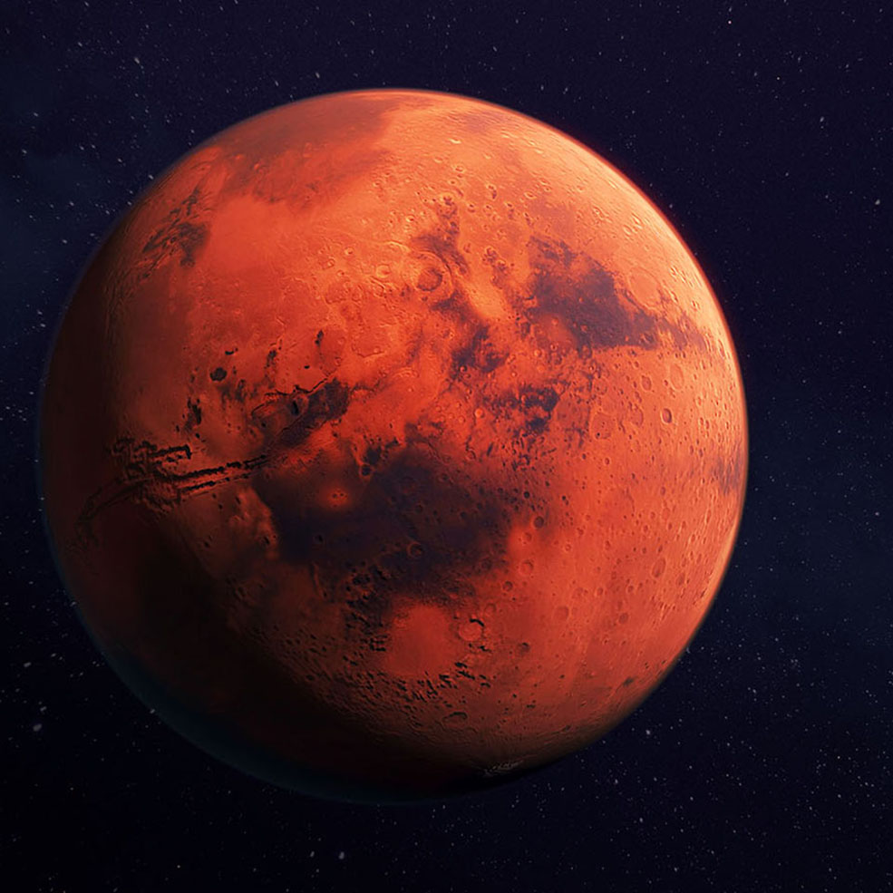
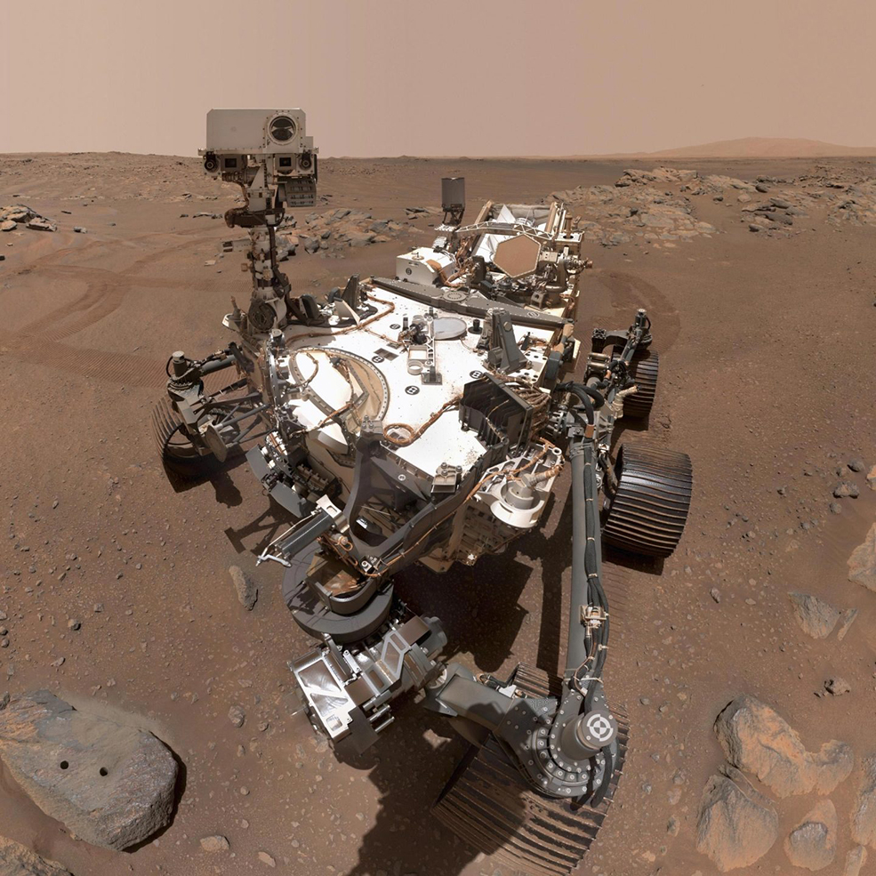
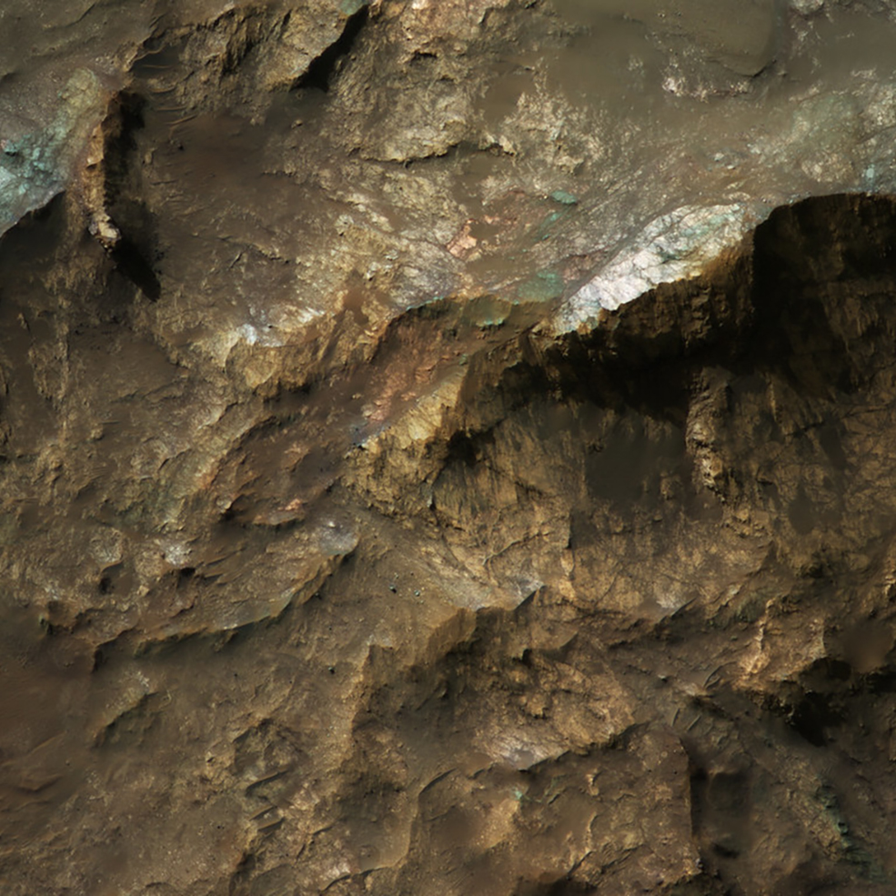
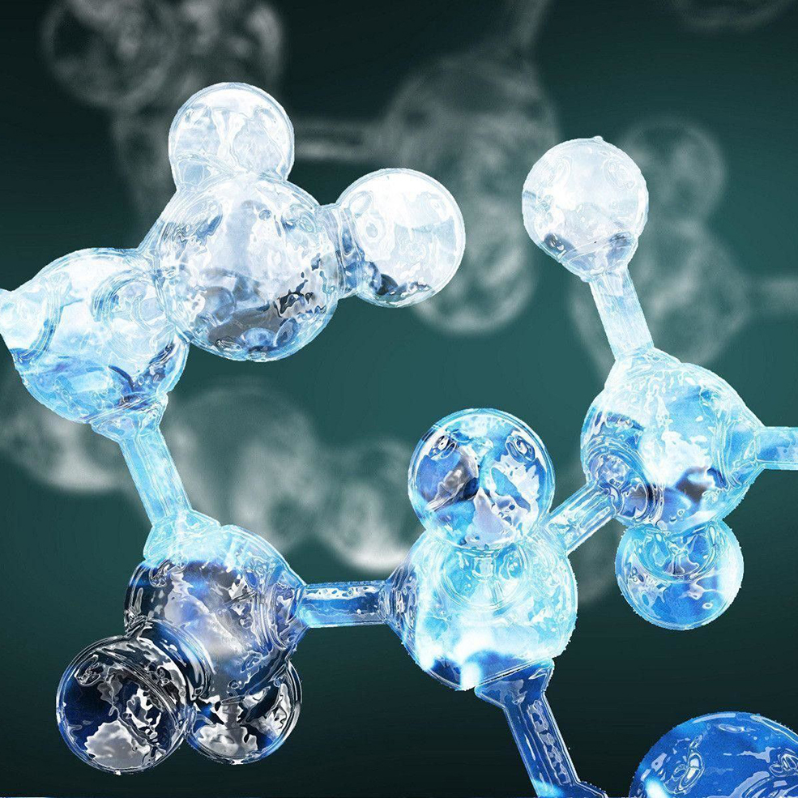

Las casas en Marte podrían ser muy fáciles de fabricar
By John Doe
La exploración espacial requiere de sangre, sudor, lágrimas… y de acuerdo a nueva investigación, quizá también otros fluidos. Científicos han desarrollado un hormigón especial empleando sangre y orina humanas...
Continuar leyendo

Perseverance confirma moléculas orgánicas en el cráter Jezero en Marte
By John Doe
Una de las principales misiones del rover Perseverance de la NASA era saber si el cráter Jezero alguna vez fue un lago. Ahora, un estudio presentado en la Reunión de Otoño de la Unión Geofísica Estadounidense...
Continuar leyendo

Marte tiene los ingredientes adecuados para la vida microbiana
By John Doe
La vida en la Tierra es resistente y prevalece hasta en los lugares más insospechados como bajo el suelo. Ahora, un nuevo estudio sugiere que lo mismo podría suceder en nuestro planeta vecino...
Continuar leyendo

Por primera vez se ha producido oxígeno en Marte
By John Doe
La misión Perseverance continúa haciendo historia en Marte. El instrumento MOXIE, instalado en el rover, pudo fabricar oxígeno de la atmósfera marciana por primera vez. En una hora, produjo aproximadamente 5,4 gramos de oxígeno molecular...
Continuar leyendo